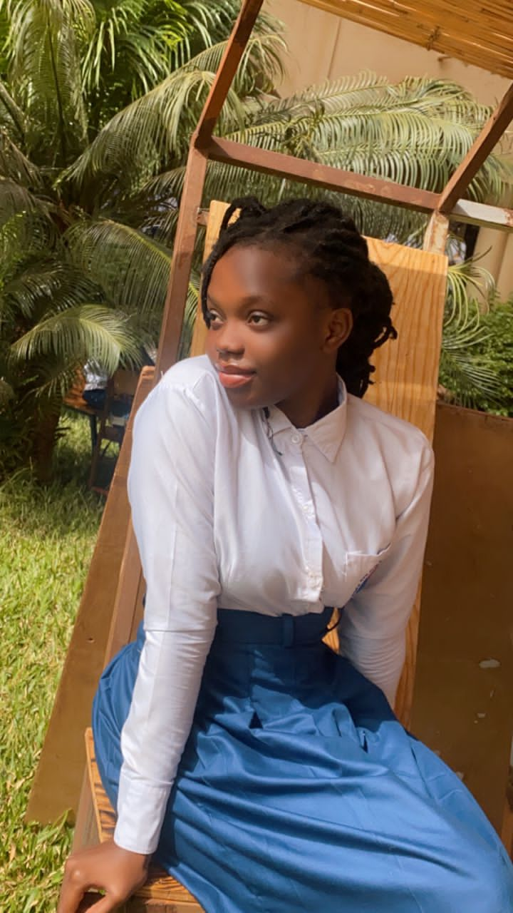

je m'appelle Zoubga Hashley Farida ,j'ai 19ans et je suis actuellement étudiante en premiere année de technologie du genie logicielpassionnée par la technologie et le numerique , j'ai choisi ce domaine parce qu'il offre une infinité de possibolités pour apprendre à creer et résoudre des probleme concrets
je suis particulierement passionnée par le développement full stack,car il me permet de travailler aussi bien sur l'interface utilisateur que sur la logique backend et fontend .cela me pousse à etre polyvalente, organisée et à maitriser plusieur technologies